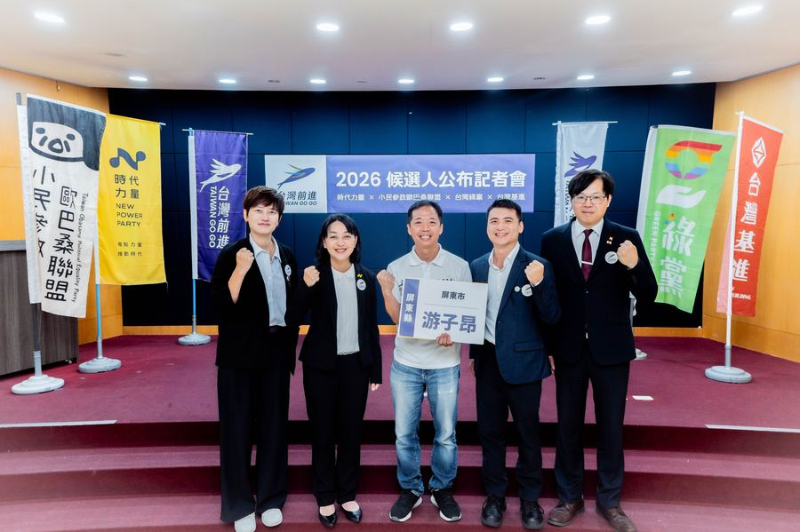

我要做的五件事
這五項是 2026 年 9 月 2 日跟參選人登記文件一起送進選務單位的正式政見，不是選前隨口講講的話。每一件都在市民代表職權範疇內可以實際推動。你對哪一件有話說？直接留言給我。
食安透明監督
監督轄內公有市場與夜市的食安稽核，要求每年公開稽查人力與抽驗數據，讓稽查不是做完就沒了。
- 轄內公有市場、夜市食安稽核
- 每年公開稽查人力與抽驗數據
✉ 填寫陳情通報表單
議事資料透明
屏東市民代表會上一屆議事錄曾經大半查不到，我從八月開始追，代表會陸續補上，11 月已全部補齊。接下來要監督每次開會後依法準時上網，讓市民查得到代表會在做什麼。
- 上一屆議事錄：追蹤後已全部補齊
- 監督議事紀錄依法準時上網
✉ 填寫陳情通報表單
逐行審查預算
我創辦的企業掛牌後每一筆帳都要接受主管機關檢驗。市政 13.6 億預算，沒有理由只能蓋章通過。
- 創辦企業掛牌接受主管機關檢驗
- 市政十億預算不能只蓋章通過
✉ 填寫陳情通報表單
公園防災韌性
復興公園 2021 年啟用時，縣府就把它定位為兼具水源淨化與都市微型滯洪空間的水岸公園。這個做法應延伸到北區其他公園，並讓滯洪功能的防災教育扎根社區。
- 比照復興公園滯洪成功經驗
- 推動滯洪功能防災教育扎根社區
✉ 填寫陳情通報表單
議題深度說明
寫信問了什麼，機關怎麼回
這幾個月我寫信問過的北區大小事，最新回覆和下一步都在這裡，有新回覆就更新。單獨頁面 →
📊 陳情服務總表
截至 2026/11/11。件數＝有案號的陳情、1999 通報與政府資訊公開申請，一個案號算一件（海豐那封 10/30 與 11/4 內容相同的信只算一件）。「已結案」＝問題已有結果，或機關已答覆、決定不再追問；其餘都還在追。機關有回覆不代表問題已解決。
🌧️ 海豐淹水縣府已回追時程，公所待回
最新回覆：縣府工務處 2026/10/28 回覆：海豐外環道由工務處養護，已到現場會勘，規劃把道路側溝的水接到海豐圳排掉；回覆沒有寫時程和經費。
下一步：10/30 已寫信請市公所在工程完成前先做三件事（11/4 再送一次）：講清楚抽水機會不會來、水抽去哪；沙包領取點提前公告；說明縣府防水閘門補助是否仍受理，若仍受理就主動通知淹過水的住戶。公所已受理，等回覆。接海豐圳什麼時候開工，會繼續問。
陳情案號：縣府 B11504532（9/6，已回）、B11504976（9/29 追問，已回）、B11505345（10/15 工務處，已回）；農田水利署 202609291001（9/29，已回）；市公所 122242（9/29，已回）、122412（10/13 追問，待回）、122612（10/30 三件事，待回；11/4 重送為 122671）｜完整說明 →
🗂️ 代表會議事錄已補齊
最新查核：2026/11/04 代表會來電告知補齊，我逐份對過：上一屆（第十九屆）八次大會的議事錄，10/21、10/29、11/3 陸續上架，現在全部查得到（10/10 時只查得到三次半）。
11/05 更新：補齊後我把第十九屆、第二十屆共 15 次定期會的議事錄全部查過一遍、逐處對原件，傳真請代表會更正 16 處（網站上架 4 處、內文誤植 7 處、公所報告前後數字不一 5 處）；這 16 處之外，另提 2 項建議（提供可搜尋的文字版或分冊）。
下一步：等代表會更正或回覆，再逐份對過；之後每次開會，看會議紀錄、議事錄有沒有準時上網。
陳情案號：縣府 B11504580（9/8 民政處，已回）、內政部 20260908054（9/8，已回）｜完整說明 →
📑 從議事錄追出來的五件事公所已受理，等回覆
寫信問了：2026/11/05 讀完議事錄後，我寫信到屏東市公所市政信箱，五件事各一封，都已受理：
- 協和東路（長春街至仁愛路）：公所自己寫這段是「緊急消防救災路線」，112 年 11 月公所向代表會報告已撤案。我問撤案前花了多少錢、縣府 111 年同意的 1,000 萬補助有沒有撥付或繳回、北區市場一帶救災有沒有替代路線。（案號 122676）
- 北區市場都市計畫：內政部專案小組 113 年就審完，今年 4 至 5 月定期會公所報告還在等中央排大會。我問公所查詢的結果、市場 107 年耐震詳評的結果，以及重劃前有沒有階段性的安全改善。（案號 122677）
- 廣東路 1586 巷淹水：公所說連通管做不了，改成布抽水機和清淤。我問抽水機幾台、多大的雨會布置、今年布置過幾次，以及縣府在上游做的 588 萬排水工程進度。（案號 122678）
- 人孔蓋、管線回填不平：112 年到 115 年在代表會被提了四次。我問巡檢紀錄、修好了哪些路段，以及公所自 114 年接管的 2,724 座手孔怎麼維護。（案號 122679）
- 自由路（大連路至信義路）路面與人行道改善：預算從 5,000 萬調到 9,139 萬，招標辦到第九次。我問第九次的結果，沒發包的話補助款怎麼處理，以及信義路到中山路那段的進度。（案號 122680）
下一步：公所回覆後，我會照「問了什麼、怎麼回、哪題沒答到」整理在這裡。
資料來源：屏東市民代表會第十九屆、第二十屆定期會議事錄（最新一本是今年 4 至 5 月的定期會）。議事錄追蹤 →
🚭 屏東公園二手菸已邀議員會勘
做了什麼：2026/11/7 整理選民提供的歷次陳情：屏東公園體育館周邊傍晚常有人抽菸，他陳情多次仍未明顯改善。我整理了他的陳情和機關回覆（衛生局 10/5 下午會同警察稽查，查到 2 人），提出「三區分流＋一個時段」的建議方向：無菸核心區、下棋休憩區、過渡性指定吸菸點，加上下午 3 點半到晚上 7 點聯合稽查。這是我的建議，會勘後再看怎麼調整，縣府還沒有回應。同一天已寫信請在地縣議員共同會勘。
下一步：平日傍晚到現場看；會勘之後，把建議整理成建議書送縣長信箱。
📮 網友反映的四件事縣府已受理，等回覆
做了什麼：網友在 Threads 反映了幾件事，我 2026/11/8 整理後寫信到屏東縣政府縣長信箱，11/9 縣府都已受理：
- 親子廁所多設在女廁內：爸爸、阿公帶小女兒出門，親子廁所在女廁裡就進不去。我請縣府盤點列管公廁和縣府場所的親子廁所各設在哪裡，評估改設在男女都能進去的獨立空間，或在男廁加設尿布台；新建、整修公廁時把「男女照顧者都能用」納入設計。（案號 B11505816）
- 和平公園共融遊戲場：縣府社會處 2026 年 2 月宣布優化升級，說工期約半年、預計 8 月底後重新開放，家長反映到現在還沒開。我請縣府說明進度、延後的原因、預計開放日期，並定期公告；也問了館內親子設施有沒有更新規劃。（案號 B11505817）
- 屏東社會福利綜合館親子停車位：民眾反映親子停車位很少。我請縣府說明現有車位數、親子和身障車位各有幾格，並評估增設或調整配置。（案號 B11505819）
- 路死犬貓先掃晶片：道路上意外死亡的狗貓，清潔隊收運前如果先掃晶片，走失寵物的飼主就能知道結果。我請縣府說明現在有沒有這個作業，並參考台北市曾經試辦的做法，評估由農業處和各鄉鎮市清潔隊合作建立流程。（案號 B11505818）
下一步：縣府回覆後公布在這裡。
💡 自立南路路燈公所已受理
做了什麼：2026/11/7 有民眾在網路上反映屏東市人行道路燈偏暗、偏黃，留言也提到自立南路路燈偏黃、雨天視線差。我 11/8 送屏東市公所市政信箱，請公所派員晚上到自立南路現場，量燈具的色溫和照度，說明要不要改善、什麼時候改善；如果這段路燈不歸公所管，請轉給負責的機關。（案號 122710）
下一步：公所回覆後公布在這裡。網路上反映的新做人行道是哪一段，確認路名後另外反映。
🚦 自由路下班時段號誌連鎖已陳情，等回覆
做了什麼：2026/11/7 有民眾在網路上反映，屏東市自由路下班時段，以前從建南路那邊綠燈起步可以一路騎到民生路，最近中間路口接連停紅燈；留言也提到，從明正國中往縣政府方向，中華路、中正路、信義路、忠孝路口要逐一停。我 11/8 寫信到屏東縣警察局局長信箱，請警察局查核自由路這段號誌時制或連鎖設定最近有沒有調整、原因是什麼，沒有調整的話請派員查是不是設備異常，並評估下班尖峰恢復或改善連鎖的可行性。（案號 122711）
下一步：警察局回覆後公布在這裡，也會回到原本反映的貼文跟大家說。
🧯 北區市場消防兩個機關都回了
最新回覆：消防局 2026/11/3 回覆：市場旁的公勤街150巷、中華路437巷在北區狹小巷道清冊裡，已納入搶救腹案；115 年下半年到現場辦過實兵搶救演練；但北區市場是分散的攤販、店鋪，沒有消防安全檢查列管、沒有檢查紀錄。火警的火災原因調查資料只給受害人或利害關係人，不提供。市公所 2026/11/3 也回了：市場內有廣播器材、主要通道設有滅火器，占用通道會勸導改善；109 年設施改善工程做的是公廁、水溝、地坪、油漆和照明。
下一步：市公所沒回的幾題（攤位數、滅火器檢修申報、占用通道勸導件數）繼續追。攤位旁的滅火器回覆沒提到，我的建議第一項還是：市場各排攤位添購強化液滅火器。
政府資訊公開申請案號：市公所 122370、消防局 122371（10/10 申請，11/3 都已回）｜完整說明 →
💧 南亞科用水等用水計畫
最新回覆：經濟部水利署、南科管理局回覆：整個南科屏東園區的用水計畫（終期）是一天 5,000 噸，自來水和再生水各一半；南亞科自己要用多少，還在建廠規劃，還沒提出用水計畫。
下一步：用水計畫提出後，去看水從哪裡分出來。水利署 113 年的數字，屏東縣的水八成五是農業在用。
陳情案號：水利署 11510006（10/5，已回）、南科管理局 1150553（10/5，已回）
🤝 街友照顧（遊民外展）已依法申請紀錄
最新回覆：縣府社會處 2026/10/28 回覆：外展服務委託民間基金會辦理，屏東車站周邊每週訪視 2 次，天氣太熱或太冷時啟動關懷；縣府的遊民輔導聯繫會報一年開一次。會議紀錄社會處說是內部業務會議，不提供。
下一步：10/30 已依政府資訊公開法申請會報的決議和分工（討論發言同意抽除），縣府已受理，等回覆。
案號：縣府 B11505421（10/18 陳情，已回）、B11505628（10/30 政府資訊公開申請，待回）
🐦 總圖玻璃帷幕鳥擊縣府規劃改善
最新回覆：縣府文化處 2026/11/2 回覆：總圖已聯繫屏科大鳥類專家進行實地評估，會在玻璃張貼防窗殺貼紙；也會邀請縣內國小學童畫「猛禽圖」，放進防護設計。
下一步：回覆沒寫什麼時候貼，之後經過總圖會去看，貼好再跟大家說。
陳情案號：縣府 B11505586（10/28，已回）
🚦 紅燈倒數盤點縣警局已回
最新回覆：縣警察局 2026/10/28 逐處回覆，和生路二段一處路口因控制器機型無法調整，已關閉紅燈倒數；其他路口分別說明為補秒設定、早開時相設計，或查無異常。
下一步：補秒設定的路口，警察局判斷不致造成誤判；有民眾回報這些路口的最新情形，我會照實公布。
陳情案號：縣警察局 121990（9/10 和生路號誌）、122123（9/17 補充）、122200（9/24 建南路口）、122436（10/15 全縣盤點）；公路局 THBU3-11509204100（9/29 萬丹萬新路×台27線）——都已回；其中 121990、122123、THBU3-11509204100 已結案｜完整說明 →
🚥 信義路、忠孝路口號誌研議中
最新回覆：縣警察局 2026/10/5 回覆：號誌暫時維持全天運作，會研議調整週期，減少停等。
下一步：研議要多久、什麼時候調，會再問。
陳情案號：縣警察局 122200（9/24，與建南路口同一封，已回）
🛣️ 民生路路面、自由路人行道工程已申請，等公所回覆
申請了什麼：2026/10/8 依政府資訊公開法，向屏東市公所申請兩項資料：民生路歷年路面改善工程的施工範圍與後續規劃；自由路（中山路至大連路）人行道改善工程的辦理情形。
目前狀態：依法公所應在受理後 15 天內決定給不給，必要時可延長 15 天並通知申請人。截至 2026/11/08，兩案都還沒有回覆，我也沒有收到延長通知。
下一步：送催辦，請公所儘快作成決定。
政府資訊公開申請案號：市公所 122350（民生路）、122351（自由路）（10/8，待回）
🦎 總圖、萬年溪周邊綠鬣蜥縣府已受理，等回覆
做了什麼：2026/10/19 我在總圖旁的棕櫚樹上看到一隻幼體綠鬣蜥。10/29 寫信到縣長信箱，請縣府說明：千禧公園、總圖周邊和萬年溪市區段有沒有定期巡查；圖書館、公園、學校周邊接到通報後多久處理、通報的人會不會知道結果；處理方式是否依林業及自然保育署「確保自身安全及不虐待動物」的原則；要不要在公園設告示，說明看到時怎麼通報。
下一步：縣府回覆後公布在這裡。
陳情案號：縣府 B11505600（10/29，待回）
🪑 廣興公園風雨球場座椅公所已回，未續辦
申請了什麼：2026/9/15 依政府資訊公開法，向屏東市公所申請廣興公園風雨球場座椅設置工程的資料：多次招標沒有結果之後怎麼處理、預算怎麼處理、沒有廠商投標的原因。
最新回覆：屏東市公所 2026/9/30 函復：這項工程 112 年兩輪共公告 6 次，都沒有廠商投標（第一輪預算約 31.7 萬元，調整經費後約 38 萬元），本案未予續辦；經費是公所自籌、不是專款專用，已回到原本的預算科目。沒有廠商投標的原因、場邊座椅後來有沒有用別的方式設置，回覆沒有說明。
下一步：目前不再追問；現場有新狀況再問。
政府資訊公開申請案號：市公所 122094（9/15，已回）
🧹 側溝清疏與病媒消毒公所已回
做了什麼：有網友反映部分路段側溝蟑螂多。2026/10/7 我寫信問屏東市公所：市區道路側溝清疏和病媒消毒由誰負責、多久做一次、今年做了幾次、有沒有公開的消毒排程。
最新回覆：市公所清潔隊 2026/10/19 回覆：主要道路側溝的清疏和消毒由清潔隊負責，每年例行執行；全里消毒由里長申請，大約每季一次；環保局、衛生局會依登革熱指數，不定期會同清潔隊消毒。今年做了幾次、有沒有公開排程，回覆沒有回答。
下一步：目前不再追問；有新的反映再問。
陳情案號：市公所 122344（10/7，已回）
💡 千禧公園路燈疑似漏電已修復
做了什麼：2026/8/7 千禧公園一支路燈疑似漏電，我打 1999 通報。
結果：8/8 上午修復完成，8/9 公園的兒童劇活動時正常亮著。
1999 案號：D11507936（8/7 通報，已修復）
用得到的公開資料
政治，也可以很實用。這裡收集公民團體用開放資料做出來的查詢工具，輸入你住的地方，三秒鐘找到答案。
七年在地，紮根屏東
格外農品創辦人 × 食農永續推動者 × 屏東市民
-
2005 以前國立臺灣藝術大學 電影學系（肄業）後轉學至義守大學
-
2005 — 2009義守大學 大眾傳播學系（學士）傳播與設計學院
-
2009 — 2013國立台南藝術大學 動畫藝術與影像美學研究所（肄業）音像藝術學院
-
2012 — 2014綠黨高雄支黨部 召集人台灣綠黨
-
2014 — 2015綠黨台南支黨部 評議委員會主任委員台灣綠黨
-
2015 — 至今格外農品股份有限公司 執行長2025 年登錄創櫃板（股票代號 7401）
-
2018 — 2023南方食農教育聯盟 召集人推動台南、高雄、屏東食農教育聯盟運作
-
2021農糧署 產銷履歷食農教育場域整備及行銷輔導計畫 輔導顧問行政院農業委員會農糧署
-
2021 — 2023國發會地方創生南區輔導中心 專家顧問國家發展委員會，協助南台灣地方創生團隊輔導
-
2022 — 至今台灣食農創生發展協會 理事長推動食農 ESG 企業合作
-
2023嘉義市青年創業獎勵補助計畫 團隊輔導業師嘉義市政府
-
2025農業部水土保持局臺南分署 農村旅遊輔導與加值計畫 輔導顧問農業部水土保持局臺南分署
-
2025 — 2026科技農企業計畫 輔導陪跑業師農業科技新創輔導計畫
-
2025 — 至今台灣綠黨 中央評議委員台灣綠黨
-
2026屏東市北區市民代表候選人台灣綠黨提名 · 台灣前進陣線（時代力量、台灣基進、綠黨、小歐盟）聯合推薦
-
著作《開店KNOW HOW：完全掌握行銷六大致勝關鍵》商業實務指南
-
著作《商圈經營與管理》零售管理教材
-
著作《門市營運管理》零售管理教材
游子昂的每個時刻
從創業到參選，媒體報導與競選動態，依時間序完整記錄。
［追蹤報導］屏東觀光有計畫，成效誰來交代？勝利星村，大爆負評
墨新聞接續 11 月 8 日的報導，檢視西市場空攤位日租試辦、屏東職人町進駐期限等公開文件，並談及青創基地使用情形，追問成效何時交代。報導指出，游子昂已把景點整合、場館營運、公有創業空間使用三個問題，透過縣長信箱請縣府回應。
查看報導 →屏東觀光人潮難留？王婉諭、游子昂攜手發掘創生困境
王婉諭主席 11 月 6 日到屏東，陪游子昂走訪勝利星村與中山黃昏市場。報導從勝利星村、西市場的營運效益，談到屏東市青年人口減少；游子昂提出公有閒置空間活化、AI 數位工具應用、串連企業 ESG 資源等方向：「屏東不缺人才，缺的是讓人才回來的條件。」
查看報導 →第三勢力手牽手掃街 左楠-薛兆基市場聚人氣
時代力量主席王婉諭南下高雄，陪台灣前進陣線推薦的薛兆基掃市場，在楠梓莒光市場與于仙玲、游子昂會合，跨區聯合拜票。報導寫到游子昂曾追查海豐淹水與代表會議事資料公開，把地方治理與資訊透明列為參選重點。
查看報導 →影／第三勢力拚突圍 王婉諭南下高雄助選陪薛兆基掃市場
聯合報記錄王婉諭主席陪薛兆基走訪左營哈囉市場、楠梓莒光市場，于仙玲與游子昂也到場，展現第三勢力跨區串聯。王婉諭呼籲選民看清候選人的背景與清廉紀錄，跳脫政黨標籤投票。
查看報導 →豬心、火鍋料都收到了！王婉諭陪三地候選人市場合體 薛兆基笑稱：有心也有料
台灣前進陣線跨區聯合拜票，王婉諭主席陪薛兆基走訪哈囉市場、莒光市場，于仙玲與游子昂跨區合體。王婉諭說「選區有界線，合作沒有界線」；報導介紹游子昂創辦社會企業格外農品，關注學童通學安全、閒置空間活化與城市發展。
查看報導 →
跨越選區串聯第三勢力！ 王婉諭陪薛兆基等三名候選人走市場
新高屏時報記錄台灣前進陣線跨區合作：王婉諭主席陪薛兆基走訪左營哈囉市場、楠梓莒光市場，于仙玲與 15 號游子昂跨區合體走訪市場，展現第三勢力整合地方人才、彼此支援的行動。
查看報導 →時代力量主席王婉諭陪薛兆基走訪市場
臺灣導報報導台灣前進陣線跨區聯合行動：王婉諭主席陪薛兆基走訪市場，與于仙玲、屏東市北區市民代表候選人游子昂一起到楠梓莒光市場拜票。王婉諭表示，第三勢力不能只談理念，更要用實際行動爭取認同。
查看報導 →王婉諭合體高屏候選人市場拜票 攤商肯定薛兆基有心也有料
新頭殼報導王婉諭主席陪薛兆基走訪市場，並與于仙玲、游子昂共同前往楠梓莒光市場拜票。報導介紹游子昂參選屏東市北區市民代表、號次 15 號，創辦社會企業格外農品，關注學童通學安全、閒置空間活化及城市發展。
查看報導 →王婉諭陪同三地候選人合體拜票 薛兆基獲贈豬心、火鍋料：有心也有料
屏東時報記錄台灣前進陣線跨區聯合行動：從高雄左楠、前鎮小港到屏東市北區，王婉諭主席陪薛兆基、于仙玲、游子昂一起到楠梓莒光市場拜票。報導介紹游子昂號次 15 號，關注學童通學安全與閒置空間活化。
查看報導 →屏東縣長選戰暗潮洶湧 藍綠各有致命傷 第三勢力1.9萬票牽動選情
墨新聞的屏東選情分析，寫到游子昂對海豐今年三度積淹水的批評：金城街已列為防汛熱點，屏東市卻沒有移動式抽水機預布點；並依他公開的公文往返，整理縣府與市公所對抽水機調度的說法。
查看報導 →四黨結盟戰力是否提升？「台灣前進陣線」的42天考驗！
墨新聞到高雄、屏東採訪台灣前進三位候選人，分析四黨結盟能否形成共同議題。文中寫到游子昂以一面競選看板，聚焦地方財政、淹水問題與議事資訊公開，透過公共監督建立政治辨識度。
查看報導 →小黨生存空間最新實驗：四合一的「台灣前進」能前進到什麼地方？
報導者分析台灣前進四黨合作：小黨候選人選完一次，將近一半不再參選，留在同一選區再選一次的不到 5%。本篇沒有直接寫到游子昂；他是台灣前進在屏東市北區（第四選區）推薦的候選人。
查看報導 →僅用一面看板拚選舉！屏東市第三勢力游子昂的逆襲
墨新聞專訪：北區 16 人搶 9 席，游子昂以「N＋1」說明第三勢力的角色，並以海豐三度淹水、代表會議事錄查不全兩件事，談市民代表該怎麼監督。
查看報導 →「台灣前進陣線」南高屏募款餐會 宣示真正的第三勢力只能台灣優先
台灣基進、時代力量、台灣綠黨、小民參政歐巴桑聯盟四黨在高雄舉辦南高屏聯合募款餐會，游子昂以台灣綠黨提名屏東市第四選區市民代表參選人身分獲頒陣線戰旗，與現場四黨主席、召集人共同宣示本土第三勢力主張。
查看報導 →台灣前進陣線南高屏誓師 四黨攜手喊「團結護台」拚本土在野新力量
四黨在高雄晶綺盛宴台鋁館舉行南高屏聯合募款餐會，游子昂與另外三位南高屏參選人共同接下陣線戰旗，現場席開爆滿，各界人士齊聚見證本土在野力量集結。
查看報導 →《食安法》修法擬提高查驗頻率 他提醒：別再只增加法條、累垮基層
就食安法修法方向，游子昂指出兩個各版本都還沒補的盲點：檢驗量能不足、缺乏吹哨者保護，呼籲修法不能只加法條、不加人手，把基層累垮。
查看報導 →屏科正式動土！游子昂提4大顧慮：不該讓市民承擔代價
就屏東科學園區半導體供應鏈專區動土，游子昂提醒應提前應對房價、車流、水資源與農民受惠等4大衝擊。
查看報導 →賣相差就該被丟掉！格外農品把不良品變生意 23日登創櫃板
三立iNEWS報導格外農品把「格外品」做成可持續的產業模式，於12/23正式登錄創櫃板，成為社會企業類股票代號第一號。
查看報導 →響應世界糧食日！全家便利商店攜手金色三麥打造循環食品新商模
格外農品串連全家便利商店、金色三麥，把土司邊、麥芽粕與醜蔬果變身永續啤酒與乳酪小土司，示範跨產業循環經濟。
查看報導 →2024新加坡Prime Supermarket「臺灣好食日」免費試吃
格外農品產品進駐新加坡Prime Supermarket「臺灣好食日」，把台灣減廢加工食品推向海外通路。
查看報導 →遠傳榮獲經濟部Buying Power採購獎勵，攜手社創落實責任採購
格外農品獲選為遠傳落實Buying Power責任採購的社會創新夥伴，展現企業採購對社企的實質支持。
查看報導 →新加坡亞洲新聞台CNA Insider《Food, Wasted》專題採訪
新加坡亞洲新聞台CNA Insider製作《Food, Wasted》專題，採訪格外農品探討亞洲食物浪費議題與解方。
查看報導 →拍給大家看的短影音
問政進度、掃街、發面紙，還有台灣前進陣線的 MV 與支持小黨的影片，新的放最上面。點了就能播。問政的最新進度和機關回覆，以問政進度總表為準。10/26 以前的影片稱「參選人」，是當時的規定用語；10/27 抽籤後改稱候選人、15 號。
走在路上，站在一起
跑行程的日常、與台灣前進夥伴並肩的時刻——不是形象照，是真實發生在屏東的畫面。
300 個人，每人 1,000 元，撐起一場乾淨選戰
我要募的是 30 萬元，也是 300 個願意站出來的人。每一筆都進政治獻金專戶、每一筆都開收據、每一筆都依法申報。
戶名：115年屏東縣屏東市市民代表擬參選人游子昂政治獻金專戶
金融機構：臺灣銀行屏東分行（銀行代號 004）
帳號：017008424095
監察院許可日期 115/08/25（文號 院台申肆一字1151861084號），資料已公告於監察院陽光法令主題網「政治獻金專戶公告資料」。個人捐款請務必使用本人帳戶轉帳並留下真實姓名，方便我依法開立收據；若需要收據，轉帳後請透過下方聯絡表單留下姓名與聯絡方式。
- 個人捐款上限每年 10 萬元。依《政治獻金法》第 18 條，個人對同一位擬參選人每年最多 10 萬元；對不同擬參選人合計最多 30 萬元。
- 抵稅有條件，我不誇大。依第 19 條，捐給擬參選人可列舉扣除，上限是綜合所得總額 20%、且全年政治獻金合計不超過 20 萬元；前提是必須取得收據，而且捐贈對象要依法完成參選登記——我已於 2026 年 9 月 2 日完成參選登記。
- 依法不能收的錢，我會退。《政治獻金法》第 7 條列了不得捐贈的來源，若匯入的款項屬於這一類，我會依法退還並留下紀錄。
你的聲音，我來傳遞
意見、問題、願意加入志工——填表告訴我，我會親自回覆。

追蹤游子昂
即時掌握競選動態，歡迎追蹤各社群平台。